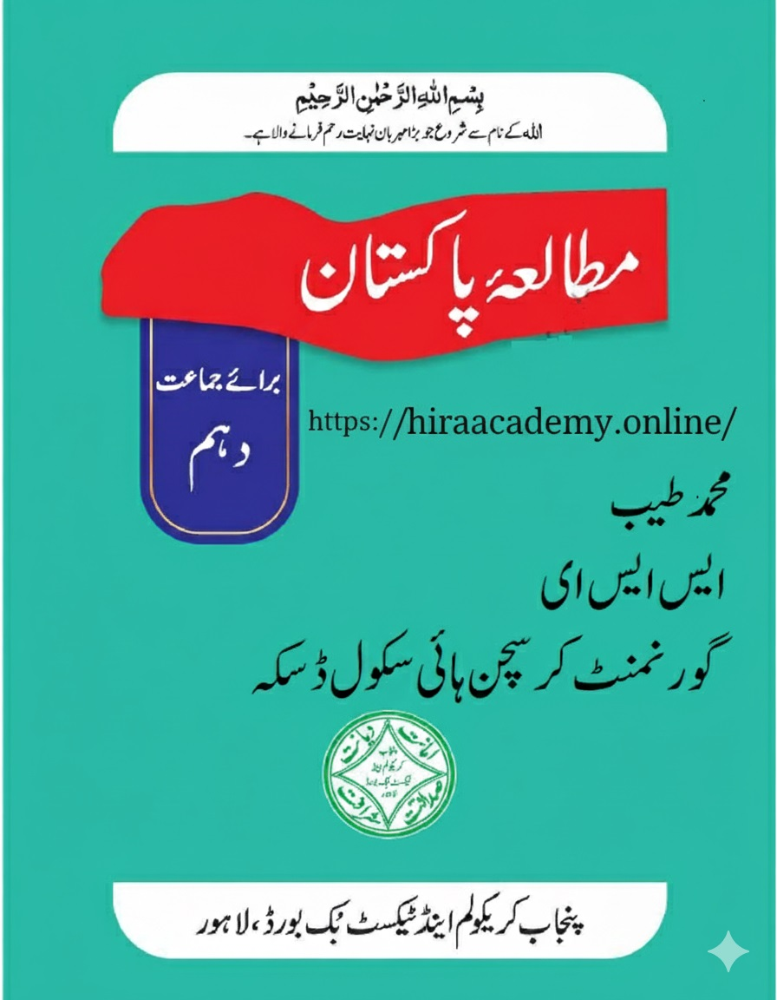

جماعت دہم کے لیے مکمل مطالعہ پاکستان نوٹس
یہ نوٹس امتحانی تیاری اور تصوراتی فہم کو مضبوط بنانے میں مددگار ہیں۔ ہر موضوع کو سادہ زبان میں بیان کیا گیا ہے تاکہ مشکل نکات بھی آسانی سے سمجھ آ سکیں۔ حل شدہ مثالیں، مشقوں کے جوابات، اہم نکات، خلاصہ جات اور پرانے امتحانی سوالات ان نوٹس کو مزید مؤثر بناتے ہیں۔ ساتھ ہی تصویری خاکے اور جدولیں یادداشت میں سہولت فراہم کرتے ہیں۔ یہ نوٹس تدریس اور دہرائی دونوں کے لیے کارآمد ہیں اور طلباء کو بہتر تیاری کے مواقع فراہم کرتے ہیں۔
یہ نوٹس امتحانی تیاری اور تصورات کی تعمیر کے لیے مثالی ہیں، جو منظم مواد پیش کرتے ہیں جو طلباء کو اہم اصولوں کو سمجھنے اور اعتماد کے ساتھ ان پر عمل کرنے میں مدد کرتا ہے۔

اہم خصوصیات:
- آف لائن مطالعہ کے لیے باب وار PDF ڈاؤن لوڈ دستیاب
- مرحلہ وار حل کے ساتھ حل شدہ مشقیں
- تفصیلی جوابات کے ساتھ مشق کے مختصر سوالات
- اہم تعریفات، فارمولے اور نظریات نمایاں
- فوری جائزہ کے لیے تصور کے نقشے اور خلاصہ جدول
موضوعات کا احاطہ:
- پاکستان کی نظریاتی اساس
- تحریک پاکستان اور پاکستان کا قیام
- تاریخ پاکستان (1971ء تا حال)
- پاکستان اور عالمی امور
- زمین اور ماحول
- آبادی، معاشرہ اور ثقافت
- پاکستان کی معاشی ترقی
- خواتین کو بااختیار بنانا
باب وار نوٹس
اہم تصورات: یہ باب پاکستان کی نظریاتی اساس پر روشنی ڈالتا ہے جس میں دو قومی نظریہ، قرارداد پاکستان، اور اسلامی جمہوریہ پاکستان کے بنیادی اصولوں کا احاطہ کیا گیا ہے۔ اس میں علامہ اقبال کے نظریہ پاکستان، قائداعظم محمد علی جناح کے تصورات، اور اسلامی تعلیمات کی روشنی میں پاکستان کے قیام کے مقاصد شامل ہیں۔
- • دو قومی نظریہ اور اس کی تاریخی اہمیت
- • قرارداد پاکستان 1940ء کے نکات
- • قائداعظم محمد علی جناح کے خطابات
- • اسلامی جمہوریہ پاکستان کے بنیادی اصول
- • دستور پاکستان میں اسلامی دفعات
اہم تصورات: اس باب میں تحریک پاکستان کے اہم واقعات، مسلم لیگ کے کردار، اور برصغیر کے مسلمانوں کے حقوق کے حصول کی جدوجہد کا احاطہ کیا گیا ہے۔ اس میں 1857ء کی جنگ آزادی سے لے کر 1947ء میں پاکستان کے قیام تک کے اہم تاریخی واقعات شامل ہیں۔
- • جنگ آزادی 1857ء اور اس کے اثرات
- • علی گڑھ تحریک اور سر سید احمد خان کا کردار
- • مسلم لیگ کی بنیاد 1906ء
- • خلافت تحریک اور عدم تعاون
- • قرارداد پاکستان 23 مارچ 1940ء
- • تقسیم ہند اور پاکستان کا قیام 14 اگست 1947ء
اہم تصورات: یہ باب 1971ء کے بعد پاکستان کی سیاسی، معاشی اور سماجی تاریخ کا احاطہ کرتا ہے۔ اس میں مشرقی پاکستان کی علیحدگی، ذوالفقار علی بھٹو کے دور، ضیاء الحق کے دور، بینظیر بھٹو اور نواز شریف کی حکومتوں، اور موجودہ دور کے اہم واقعات شامل ہیں۔
- • 1971ء کی جنگ اور مشرقی پاکستان کی علیحدگی
- • ذوالفقار علی بھٹو کا دور (1971-1977)
- • جنرل ضیاء الحق کا دور (1977-1988)
- • جمہوری دور (1988-1999) - بینظیر بھٹو اور نواز شریف
- • جنرل پرویز مشرف کا دور (1999-2008)
- • موجودہ جمہوری دور (2008 تا حال)
اہم تصورات: اس باب میں پاکستان کی خارجہ پالیسی، بین الاقوامی تعلقات، اور عالمی اداروں میں پاکستان کے کردار کا احاطہ کیا گیا ہے۔ اس میں پاکستان کے ہمسایہ ممالک کے ساتھ تعلقات، اسلامی ممالک کے ساتھ روابط، اور عالمی طاقتوں کے ساتھ تعلقات شامل ہیں۔
- • پاکستان کی خارجہ پالیسی کے بنیادی اصول
- • پاکستان اور بھارت تعلقات - مسئلہ کشمیر
- • پاکستان اور افغانستان تعلقات
- • پاکستان اور چین دوستی
- • پاکستان اور امریکہ تعلقات
- • پاکستان اور اسلامی تعاون کی تنظیم (OIC)
- • پاکستان اور اقوام متحدہ
اہم تصورات: یہ باب پاکستان کے جغرافیائی خدوخال، موسمی حالات، قدرتی وسائل، اور ماحولیاتی مسائل کا احاطہ کرتا ہے۔ اس میں پاکستان کے پہاڑ، میدان، دریاؤں کا نظام، آب و ہوا کے خطے، اور ماحولیاتی تحفظ کے اقدامات شامل ہیں۔
- • پاکستان کے جغرافیائی علاقے - شمالی پہاڑی علاقے، سطح مرتفع بلوچستان، سندھ و پنجاب کے میدان
- • پاکستان کے دریا اور آبی وسائل
- • پاکستان کی آب و ہوا اور موسمی حالات
- • قدرتی آفات - زلزلے، سیلاب، خشک سالی
- • ماحولیاتی مسائل - فضائی آلودگی، آبی آلودگی، جنگلات کی کٹائی
- • ماحولیاتی تحفظ کے اقدامات
اہم تصورات: اس باب میں پاکستان کی آبادیاتی خصوصیات، معاشرتی ڈھانچے، ثقافتی تنوع، اور سماجی مسائل کا احاطہ کیا گیا ہے۔ اس میں پاکستان کے مختلف صوبوں کی ثقافتی روایات، زبانیں، رسم و رواج، اور قومی یکجہتی کے عناصر شامل ہیں۔
- • پاکستان کی آبادیاتی خصوصیات - آبادی کی تقسیم، کثافت، شرح خواندگی
- • پاکستان کے معاشرتی ادارے - خاندان، تعلیم، مذہب
- • پاکستان کی ثقافتی多样性 - صوبائی ثقافتیں، زبانیں، تہوار
- • قومی یکجہتی کے عناصر - قومی زبان، قومی دن، قومی علامات
- • سماجی مسائل - غربت، بے روزگاری، آبادی میں اضافہ
- • سماجی بہبود کے پروگرام
اہم تصورات: یہ باب پاکستان کی معاشی ترقی، اقتصادی پالیسیوں، اور ترقیاتی منصوبوں کا احاطہ کرتا ہے۔ اس میں زراعت، صنعت، تجارت، توانائی کے شعبوں کی ترقی، اور معاشی مسائل کے حل کے لیے حکومتی اقدامات شامل ہیں۔
- • پاکستان کی معاشی تاریخ اور ترقی کے مراحل
- • زرعی شعبہ - اہمیت، مسائل، ترقی کے اقدامات
- • صنعتی شعبہ - بڑی صنعتیں، صنعتی پالیسیاں
- • تجارتی پالیسیاں - برآمدات، درآمدات، تجارتی شراکتیں
- • توانائی کے وسائل اور توانائی کے بحران کا حل
- • غربت کے خلاف اقدامات اور سماجی تحفظ کے پروگرام
- • پاکستان کی معاشی مشکلات اور حل
اہم تصورات: اس باب میں خواتین کے حقوق، خواتین کے مسائل، اور خواتین کو بااختیار بنانے کے اقدامات کا احاطہ کیا گیا ہے۔ اس میں تعلیم، صحت، روزگار، اور سیاست میں خواتین کی شرکت کو بڑھانے کے لیے حکومتی اور غیر حکومتی اقدامات شامل ہیں۔
- • اسلام میں خواتین کے حقوق اور مقام
- • پاکستان میں خواتین کی حالت زار - تعلیمی، معاشی، سماجی صورتحال
- • خواتین کے خلاف تشدد اور اس کے خلاف قوانین
- • خواتین کی تعلیم اور خواندگی کے فروغ کے اقدامات
- • خواتین کے روزگار کے مواقع اور مسائل
- • سیاست اور حکومت میں خواتین کی شرکت
- • خواتین کے حقوق کے تحفظ کے لیے قوانین اور پالیسیاں
- • خواتین کو بااختیار بنانے کے لیے حکومتی اور غیر حکومتی پروگرام
اکثر پوچھے گئے سوالات
کیا یہ نوٹس پنجاب کرکولم کے مطابق ہیں؟
جی ہاں، یہ نوٹس پنجاب ٹیکسٹ بک بورڈ کے تازہ ترین سلیبس کے مطابق تیار کیے گئے ہیں اور تمام اہم موضوعات کا احاطہ کرتے ہیں۔
کیا میں ان نوٹس کو پرنٹ کر سکتا ہوں؟
جی ہاں، آپ تمام نوٹس کو پرنٹ کر سکتے ہیں۔ ہر باب کے آخر میں پرنٹ کا آپشن دستیاب ہے۔
کیا یہ نوٹس مفت ہیں؟
جی ہاں، ہمارے تمام نوٹس مفت میں دستیاب ہیں۔ آپ کسی بھی وقت ڈاؤن لوڈ کر سکتے ہیں۔
نوٹس کتنی بار اپ ڈیٹ کیے جاتے ہیں؟
ہم ہر سال نئے سلیبس کے مطابق اپنے نوٹس کو اپ ڈیٹ کرتے ہیں اور نئے پرچوں کے مطابق اضافہ کرتے رہتے ہیں۔